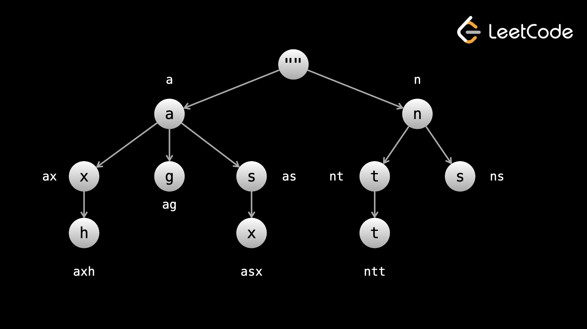

Дерево — это древовидная структура данных, также известная как префиксное дерево. Обычно дерево хранит символы строки в каждом узле. Все пути от корня до узла представляют собой строку символов на пути (идея, которую мы подробно рассматривали в этом курсе). Например:

Tries можно использовать для эффективной реализации алгоритмов поиска/сопоставления строк. Допустим, у вас есть огромный список слов и поток символов (как будто кто-то печатает). Построив дерево, вы можете отслеживать, какие слова имеют эти символы в качестве префикса. Следующий код можно использовать для построения дерева (для массива строковых words):
Существует несколько способов создания trie, и это только один из них.
def __init__(self):
# you can store data at nodes if you wish
self.data = None
self.children = {}
root = TrieNode()
for word in words:
curr = root
for c in word:
if c not in curr.children:
curr.children[c] = TrieNode()
curr = curr.children[c]
# at this point, you have a full word at curr
# you can perform more logic here to give curr an attribute if you want
return root
Построение попытки занимает Время O(n⋅k), где n — длина слов, а k — средняя длина строк в словах. Имея дерево, вы можете реализовать очень эффективные алгоритмы поиска строк. Приведенный выше код создает дерево, как на изображении выше.
Example: 1268. Search Suggestions
System
Вам дан массив строк products и строка searchWord. Разработайте систему, которая
предлагает не
более трех названий из products после ввода каждого символа searchWord.
Предлагаемые продукты должны
иметь общий префикс с searchWord. Если продуктов с общим префиксом более трёх, выбирают три
лексикографических минимума. Вернуть список списков предлагаемых продуктов после ввода каждого символа
searchWord.
При вводе searchWord формируется префикс. Например, если searchWord = «abcde», то префиксами после каждого символа будут «a», «ab», «abc», «abcd», «abcde». Для каждого префикса нам нужно найти (до) 3 лексикографически наименьших слов из products, которые имеют этот префикс.
Подход «грубой силы» заключался бы в переборе products для каждого префикса и проверке того, какие из них совпадают. Это будет иметь временную сложность O(n * m2), где n = Products.length и m = searchWord.length. Это будет стоить нам O(n⋅k), чтобы построить дерево из products, где k — средняя длина каждого продукта, и тогда мы сможем найти все слова с совпадающими префиксами всего за О(м) времени. Поскольку k мало, на этот раз сложность O(n⋅k+m) намного лучше.
Помните: каждый узел дерева представляет собой префикс, а корень представляет собой пустую строку. Мы можем использовать атрибут suggestions для хранения трех продуктов, которые следует вернуть. Чтобы соответствовать ограничениям задачи, мы ограничим размер до 3 и сохраним его в сортировке (что дешево, поскольку размер ограничен 3).
Как только дерево построено, мы можем обойти его, начав с корня и перебирая searchWord. На каждом узле дерево мгновенно выдает нам ответ.
Код, который мы использовали для построения дерева, тот же, что и шаблон, приведенный в начале этой статьи, с небольшой модификацией: у нас есть атрибут suggestions, которые мы поддерживаем на каждом узле.
def __init__(self):
self.children = {}
self.suggestions = []
def suggestedProducts(self, products: List[str], searchWord: str) -> List[List[str]]:
root = TrieNode()
for product in products:
node = root
for c in product:
if c not in node.children:
node.children[c] = TrieNode()
node = node.children[c]
node.suggestions.append(product)
node.suggestions.sort()
if len(node.suggestions) > 3:
node.suggestions.pop()
ans = []
node = root
for c in searchWord:
if c in node.children:
node = node.children[c]
ans.append(node.suggestions)
else:
# deadend reached
node.children = {}
ans.append([])
return ans
Попробуйте самостоятельно выполнить попытку решения этой предстоящей практической задачи.